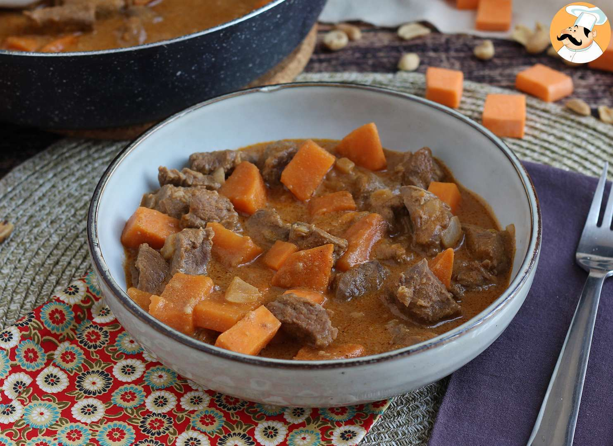

Arroz de Jollof
O arroz de Jollof é uma iguaria africana originária da África Ocidental, celebrada por suas diversas variações e significado cultural. Com raízes profundas em países como Nigéria, Gana e Senegal, o prato destaca-se pela mistura de arroz, tomate, cebola, pimentão, alho e uma variedade de temperos. Preparado com um molho de tomate espesso, o arroz de Jollof é conhecido por sua cor vibrante e sabor robusto. Tradicionalmente associado a festividades, reflete a tradição de compartilhar refeições em comunidade. Além de ser uma experiência gastronômica, o prato é uma expressão cultural da rica herança culinária africana, sendo apreciado globalmente à medida que a culinária do continente ganha reconhecimento.

Moin-Moin
